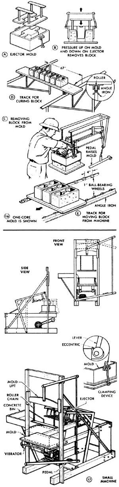

First step is placing the molding ""board"" on the vibrator arms. Some material from the discharge door of the mixer is on the platform above the mold, which is still supported in the raised position.